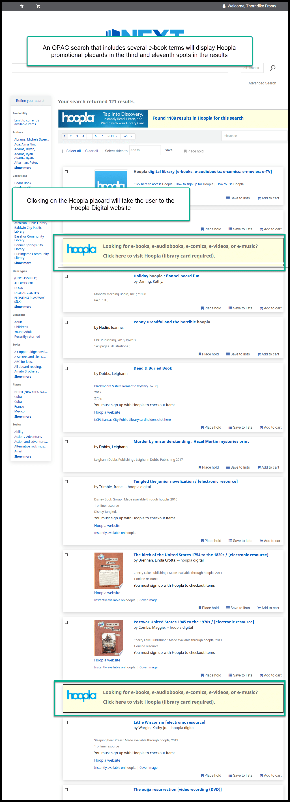
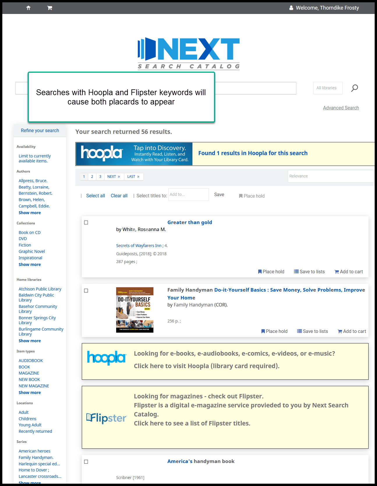

Hoopla and Flipster promotional placards¶
To help promote Hoopla and Flipster, we’ve added some promorional materials in the OPAC that will appear when patrons search for keywords that include keywords that indicate an interst in Flipster and Hoopla content.
Flipster placards will appear when a patron searches for any titles we currently subscribe to in Flipster or other keywords such as “Flipster” and “Magazine”
Hoopla placards will appear when a patron searches for keywords such as “Hoopla,” “e-book,” “electronic audiobook” or several other keywords

Both placards will appear if a patron searches for a combination of keywords found in both searches
